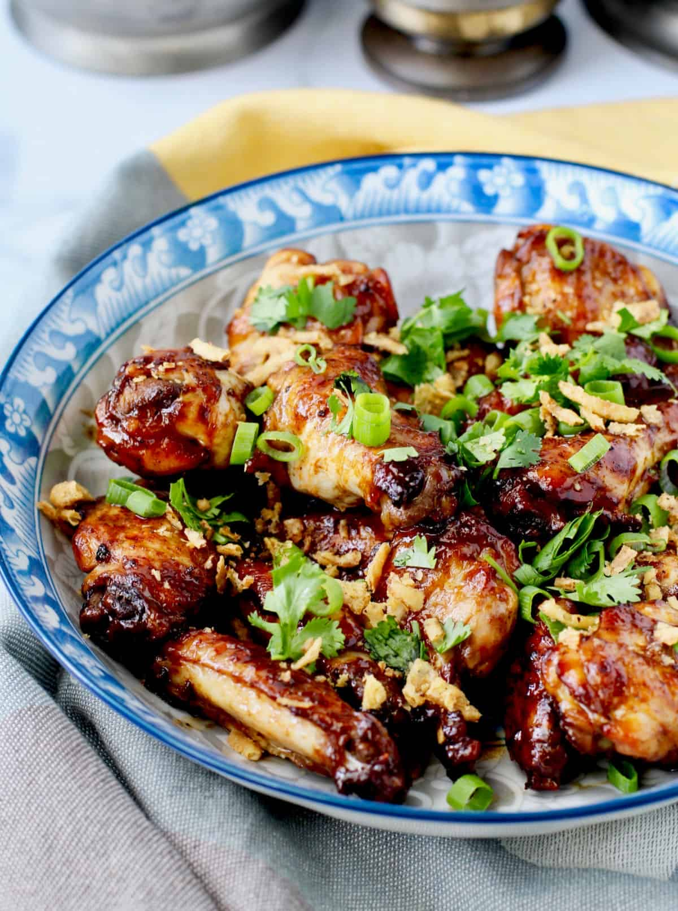

Introduction
Traditional Filipino cuisine is a delicious journey through a diverse culinary world that reflects the country's historical and cultural influences.
Traditional Filipino Cuisine
Within this Filipino cuisine is the iconic dish adobo, an aromatic blend of soy sauce, vinegar, garlic, and spices that showcases the Filipino talent for balancing flavors.
There's also Sinigang, a tamarind-based soup, that embodies the country's penchant for bold, spicy flavors, and lechon, a roasted pig, is a festive delicacy often reserved for celebrations.
Filipino Hospitality
Hospitality is the pillar of Filipino culture, and this warmth extends to the table. More than just a meal, a meal is a shared experience that symbolizes friendship and connection.
The Filipino culinary tradition “Boodle Fight” is an example of this community spirit, where a series of dishes are served on banana leaves and eaten with the participants' hands, creating a sense of unity.
Filipino hospitality, known as “magpasikat,” encourages hosts to do their best to entertain their guests. Visitors are welcomed with open arms and often treated like a big family. No Filipino gathering is complete without plenty of food to keep guests full and feeling appreciated.
Filipino cuisine caters to a wide variety of tastes, but the basis of this cuisine is the celebration of food as a symbol of connection and generosity. In the Philippines, the proverb “kaing tayo” or “let’s eat” is not only an invitation to savor the flavors but also to share warm Filipino hospitality.